Companion name options
Same module as the Goldfish mark (9 on a 10 pitch, corner radius 2), same eye. Shown at one module size, next to the fish. Drafts.

Goldfish, for scale: the signer.
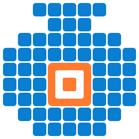
Bowl, the earlier draft: the fish in a bowl.
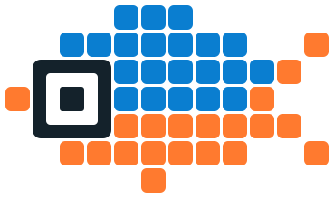
Asagi koi: blue back, orange belly, a long dorsal fin. Goldfish's big cousin.
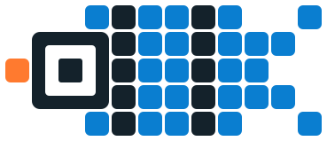
Pilot fish: slim, with dark bands. Swims beside the big fish, plots the route.
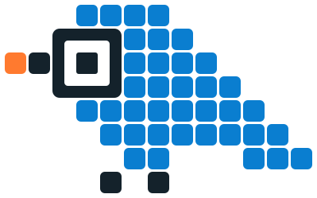
Clark's nutcracker: remembers thousands of caches. The orange seed in its beak.
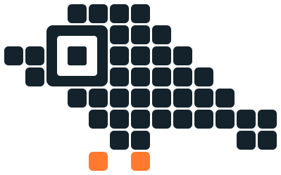
Muninn, Odin's raven of memory: flies out, watches, reports back.
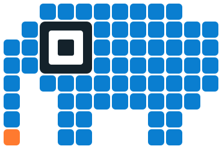
Elephant: never forgets. Carries the goldfish (orange) in its trunk.
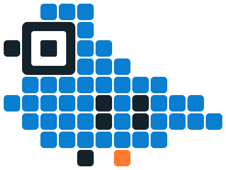
Carrier pigeon: takes the signed message out to the network. Grey-blue, two dark wing bars, the orange capsule on its leg.
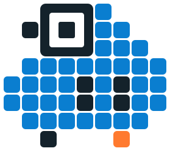
Round: a puffed-up ball of a pigeon, head on top, tiny beak, wing bars, orange capsule.
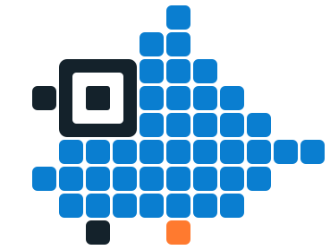
Wing up: mid-flap, about to fly the message out.
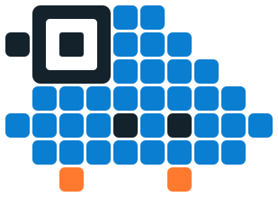
Chunky: big head, short body, stubby tail, both orange feet.
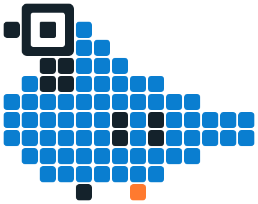
Small head, big puffed chest: the eye stays, the body grows. Dark neck sheen, two wing bars, long tail, orange capsule.
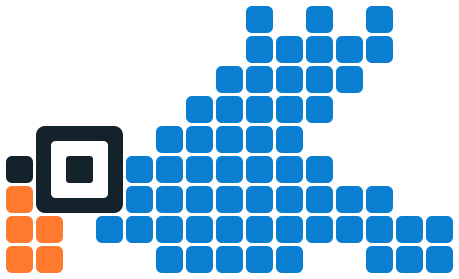
Flying dove, wing up, the orange letter (the signed transaction) hanging from its beak.
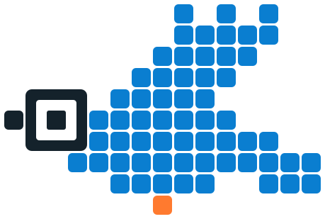
Flying dove, wing up, the orange capsule tucked under its body.

Standing pigeon (a rock dove, the carrier pigeon): QR-eye head, puffed chest, tail down, orange feet. 9x9 like the fish's raster.